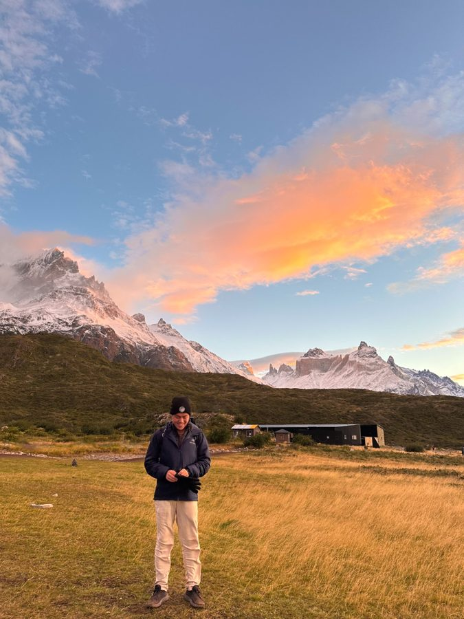

As a seasoned traveler, I write the detailed, honest travel guides
that I wish I had before I went. 48 and counting.


Thoughtfully written and researched travel guides

My friends kept asking me for travel recommendations so… I created this blog instead! I'm a travel enthusiast & backpacker based out of San Francisco, CA. Getawayguide is where I write about what I actually found: the best beaches, pristine alpine lakes, once-in-a-lifetime experiences, most memorable hostels or the boring travel logistics.
More about me